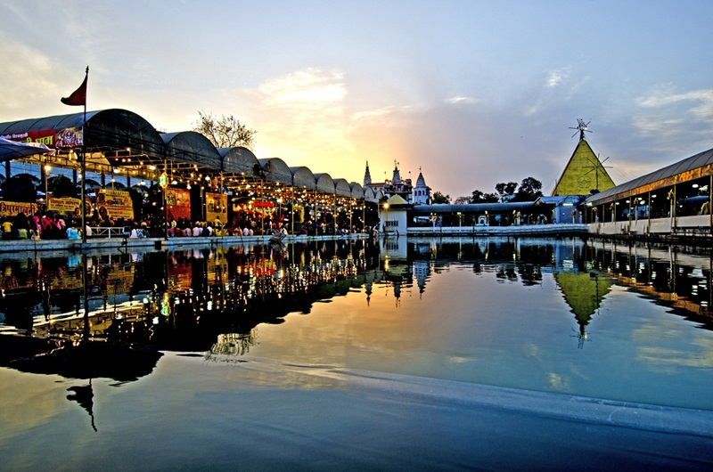
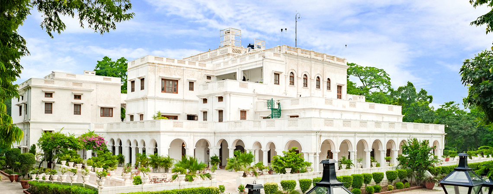

Amritsar

Jalandhar

Patiala
PUNJAB
India Begins here...
Punjab, the Land Of Five Rivers, is bestowed with the beauty of nature as well as a rich culture that the country carries its pride in. Right from spirituality to commercialization, this state will leave you enthralled regardless of what you seek. If you are a true traveler who wishes to witness the true essence of Punjab, you must take a circuit! These places to visit in Punjab are perfect to add into your itinerary, as you will come back home with lovely memories to hold on to. Experience the king-size life of Gabrus and indulge in the traditional folk activities like Bhangra and bottoms-up with Lassi. After all, you are in Punjab!!!
Most visited places in Punjab